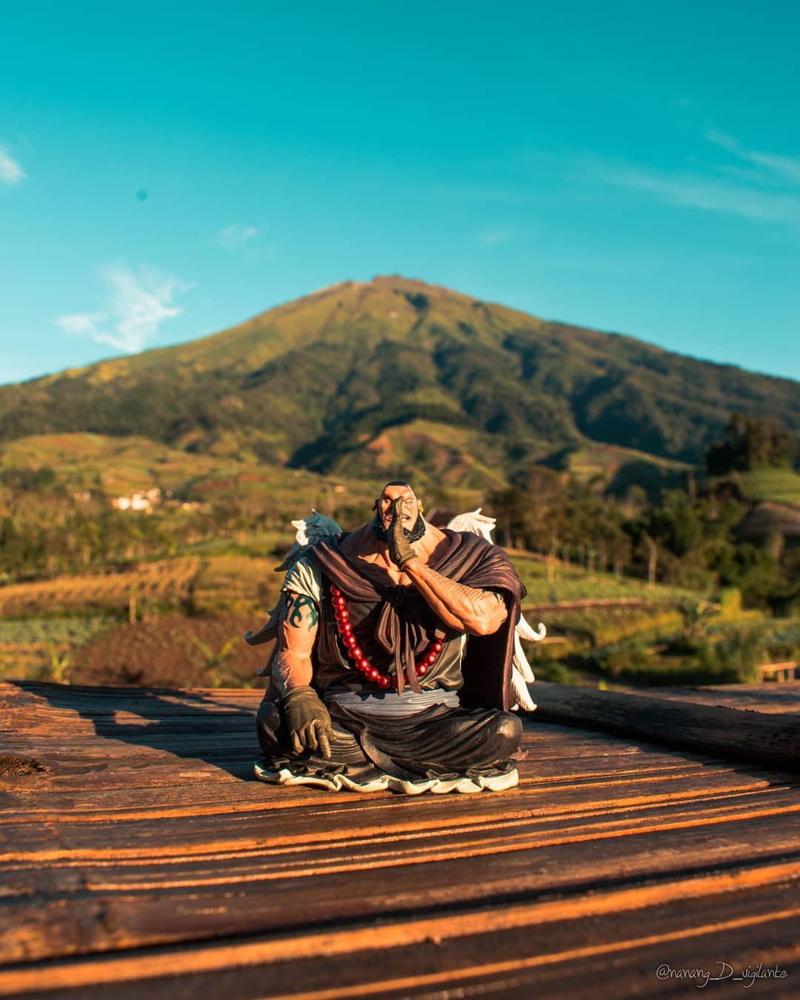
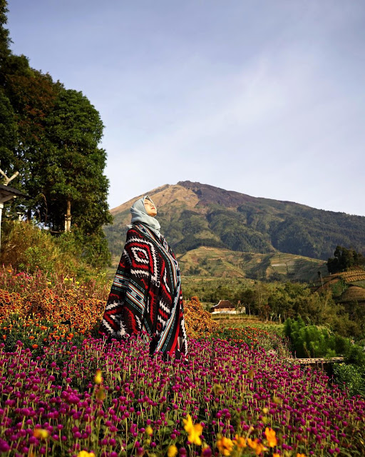

-
31 Agustus 2020 / No Comment
Wisata Alam Silancur Highland Magelang
Dadapan,Mangli,Kaliangkrik,Magelang,Jawa Tengah
Silancur Highland terletak di desa Mangli, kecamatan Kaliangkrik, Magelang, Jawa Tengah. Lokasi tepatnya berada di kaki gunung Sumbing dengan ketinggian 1.300 meter di atas permukaan laut. Silancur Highland berjarak 15 kilometer dari alun-alun kota Magelang. Butuh waktu sekitar 30 menit untuk mencapainya. Bagi pengunjung yang menyukai momen sunrise, Silancur Highland sangatlah cocok dijadikan sebagai destinasi wisata. Karena pengunjung akan dimanjakan dengan panorama sunrise yang menakjubkan, matahari terbit dari sebelah timur yang dihiasi siluet dari Gunung Merapi, Merbabu, Andong dan Telomoyo.kembali ke atas
Keindahan Silancur Highland
Silancur Highland Dini hari menjadi waktu yang pas untuk berkunjung ke Silancur Highland. Pemandangan terbuka ke arah timur membuat sunrise atau matahari terbit bisa disaksikan dengan jelas saat cuaca cerah. Saat langit masih gelap, gemerlap lampu Kota Magelang menjadi obyek foto yang layak diabadikan para fotografer malam. Saat momen sunrise, pengunjung bisa mengabadikannya melalui lensa kamera. Selain itu, proses kemunculan sunrise juga sangat pas diabadikan menjadi timelapse. Pada pagi yang cerah di musim hujan, timelapseakan semakin menawan dengan pergerakan awan dan kabut yang menghiasi panorama langit sebelah timur. Ketika momen sunrise berlalu, bukan berarti keindahan di Silancur Highland sirna begitu saja. Sebaliknya, panorama yang sebelumnya tidak terlihat karena gelap, menjadi nampak. Pengunjung bisa berfoto di spot-spot foto yang tersedia dengan latar belakang pemandangan nan memesona. Pengelola Silancur Highland juga telah menata objek wisata ini dengan membangun taman yang dihiasi bunga-bunga cerah. Tiket masuk objek wisata Silancur Highland dibanderol dengan harga yang terjangkau, yakni Rp 10 ribu per orang. Sementara, biaya berkemah di Silancur Highland dibanderol dengan harga Rp 15 ribu per orang.
Spot Yang Ditawarkan
Di sebelah selatan ada Gunung Merapi, Merbabu, kemudian dua gunung kecil, yakni Andong dan Telomoyo mentara, bila melihat ke arah barat, Gunung Sumbing setinggi 3.371 mdpl tampak menjulang tinggi di depan pendaki gunung yang berlalu-lalang di sekitar Silancur Highland yang ingin mendaki Gunung Sumbing via Mangli. Pemandangan tersebut menjadi salah satu spot berfoto favorit para pengunjung, karena tempatnya yang sangat instagramebel.
Silancur Highland Magelang
Silancur Highland adalah tempat wisata selfie di daerah magelang. Tempat ini dibuat memang untuk tujuan berfoto. Lokasi yang strategis yaitu di kaki gunung membuat suasana sangat sejuk.
30 Agustus 2020
Oleh : Ahmad Khaniful Huda
WA : 089674474400 (Hanif)
SMKM BANDONGAN
Magelang adalah daerah yang memiliki banyak destinasi wisata di Jawa Tengah. Menyebut Magelang tidak luput dari Candi Budha terbesar di dunia yakni Candi Borobudur. Namun sejatinya Magelang memiliki destinasi wisata yang tidak kalah menarik untuk disinggahi, satu diantaranya adalah Silancur Highland.
Gambar Terkait
